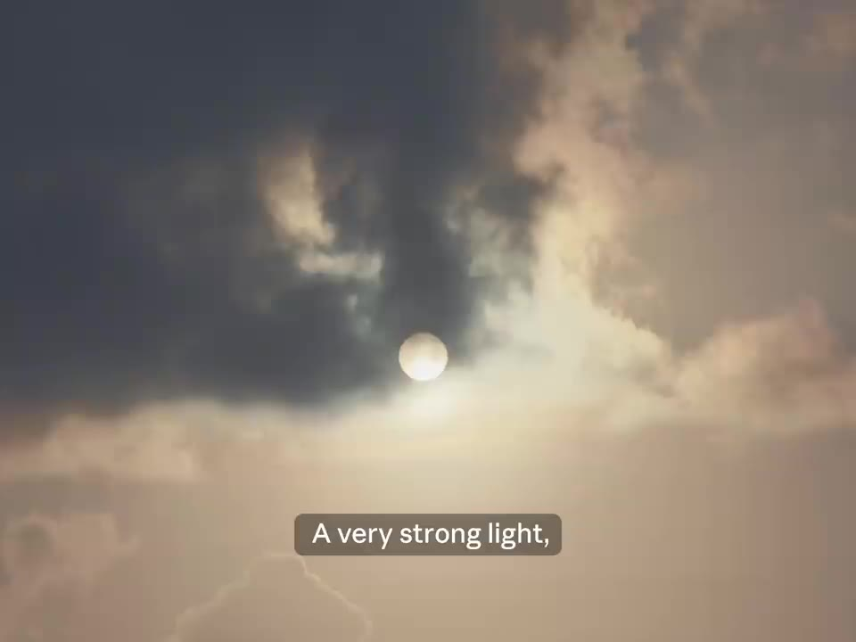
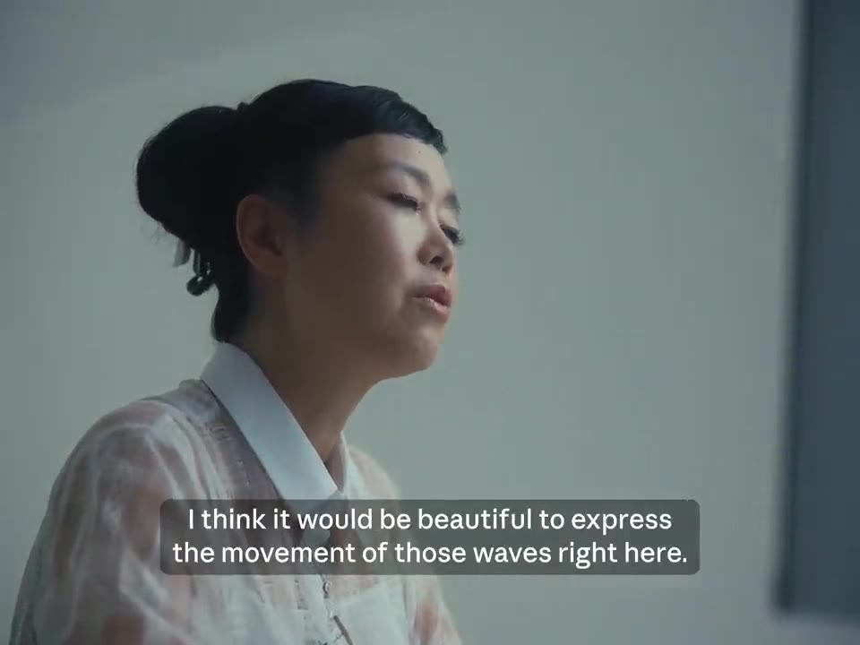
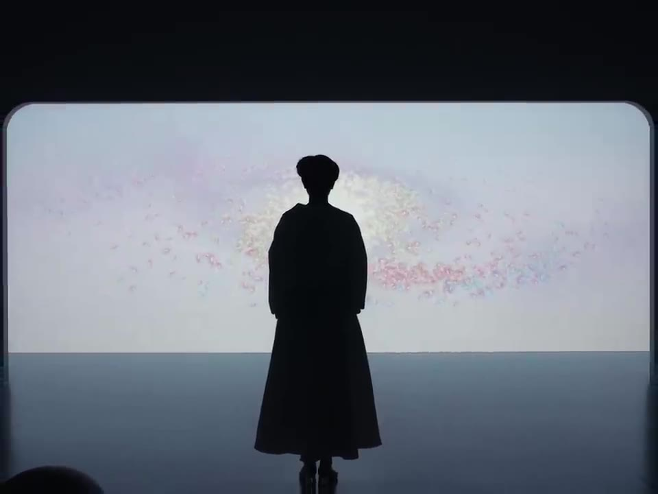
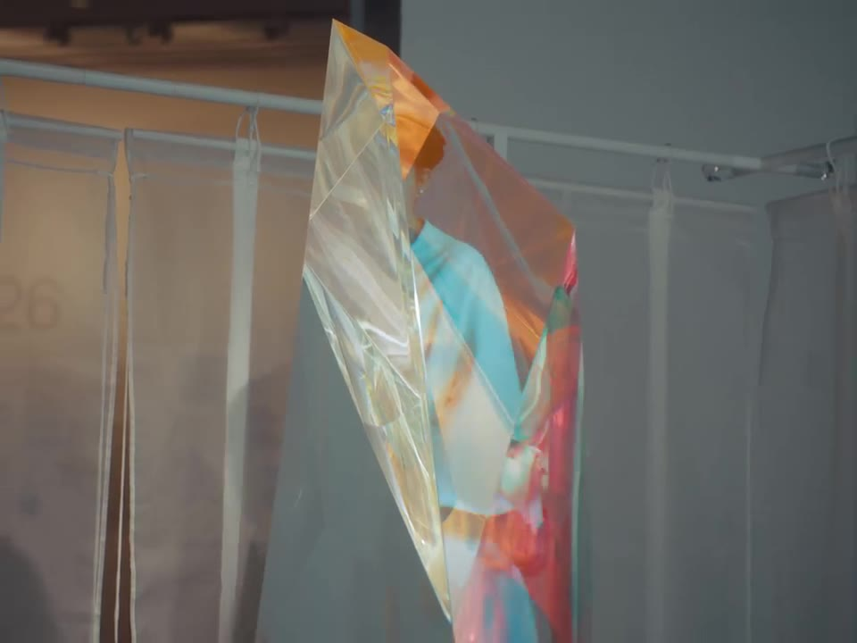

Mariko Mori's world of radiant light
▶ 원본 영상 보기한눈에 보기
- 모리 마리코(Mariko Mori)는 27년 전 겪은 '눈으로 볼 수 없는 강한 빛'의 체험으로 돌아가려는 마음에서 이번 작품을 만들었다.
- 신작 영상 작품은 Claude와 함께 만들었다. 영상 설명에 따르면 Claude로 컴퓨터 그래픽 애니메이션용 코드를 작성했다.
- 작가는 기술과 영성을 대립으로 보지 않고, 도구를 "우리 마음을 비추는 거울"로 본다.
- 이 빛의 체험을 혼자 간직하지 않고 다른 사람과 나누려고 영상 작품으로 만들었다.
- 작품은 모리 미술관 회고전 《Mariko Mori: All That Shines》(2026.10.31~2027.3.28) 마지막 전시실의 7m 폭 스크린에서 볼 수 있다.
이런 분께 도움이 됩니다
- AI가 예술 창작에서 어떤 역할을 할 수 있는지, 작가의 시선으로 보고 싶은 분
- 모리 미술관 전시 《All That Shines》를 가기 전에 작품 배경을 알고 싶은 분
핵심 내용
작품의 출발점: 빛의 체험
- 작가는 27년 전 "눈으로 볼 수 있는 빛이 아닌, 매우 강한 빛"을 신비롭게 체험했다고 말한다. (0:01)

- 드로잉을 할 때 특히 자유롭다고 한다. 시간이 사라지고 마음의 경계가 잠시 풀리며, 그 빛으로 돌아갈 수 있을 것 같은 느낌이 든다고 한다.
- 이번 작품은 그 체험으로 다시 한번 돌아가고 싶다는 바람에서 나왔다. (1:31)
💡 작품의 핵심 동기는 기술 과시가 아니라, 개인적인 빛의 체험을 다른 사람과 나누는 것이다.
기술과 영성, 그리고 Claude
- 작가는 기술과 영성이 흔히 정반대로 여겨지지만 자신은 그렇게 보지 않는다고 말한다. (0:44)
- 도구는 아무리 복잡해도 "우리 마음을 비추는 거울"일 뿐이라는 것이 작가의 관점이다.
- 최신작은 Claude와 함께 만들었다. 영상 설명에는 Claude로 컴퓨터 그래픽 애니메이션용 코드를 작성했다고 나온다.
- 영상에서는 바닷가에서 파도가 높다고 말하며, 그 파도의 움직임을 표현해 보면 아름답겠다고 하고 "한번 해 보세요"라고 요청한다. 이것이 Claude에게 건넨 요청으로 보인다(자막상 대상은 불분명).

전시와 출품작
- 전시: 《Mariko Mori: All That Shines》, 모리 미술관(도쿄), 2026년 10월 31일~2027년 3월 28일.
- 신작은 마지막 전시실의 7m 폭 스크린에 상영되며, 수평선이 갈라지며 눈부신 빛의 세계가 열리는 장면이라고 설명란에 소개되어 있다.

- 촬영지는 일본 미야코지마와 롯폰기다.
| 시각 | 작품 | 연도 |
|---|---|---|
| 1:18 | Shrine | 2025 |
| 1:20 | Wave UFO | 1999–2002 |
| 1:25 | Unity Drawing X | 2025 |
| 1:29 | All That Shines (모리 미술관 의뢰·제작) | 2026 |

기억할 숫자·인용
- 27년 전: 작가가 빛을 체험한 시점
- 7m: 신작이 상영되는 스크린의 폭
- 30년 이상: 기술을 창작 수단으로 탐구해 온 기간 (영상 설명)
- "A tool, no matter how complex it is, is nothing more than a mirror reflecting our minds."
생각해볼 점
- 영상은 Claude를 제작 협력자로 소개하지만, 작가가 Claude에게 구체적으로 무엇을 요청했고 어떤 과정을 거쳤는지는 나오지 않는다. 코드 작성이라는 정보는 영상 설명에서만 확인된다.
- "도구는 마음의 거울"이라는 관점은 작가의 견해다. AI를 어디까지 창작의 주체로 볼지는 다른 시각도 있을 수 있다.
- 영상은 Anthropic의 Claude 채널에서 올린 홍보 성격의 영상이라는 점도 감안해서 볼 만하다.
바로 해볼 일
- 전시에 갈 계획이라면 모리 미술관 일정(2027.3.28까지)을 확인하기
- 영상 설명란의 출품작 4점을 찾아보고 마음에 드는 작품 하나 골라 보기
- 내가 쓰는 도구를 "마음을 비추는 거울"로 본다면 무엇을 만들고 싶은지 한 줄 적어 보기